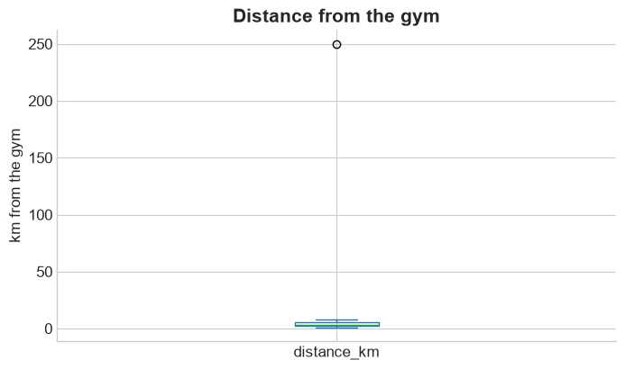
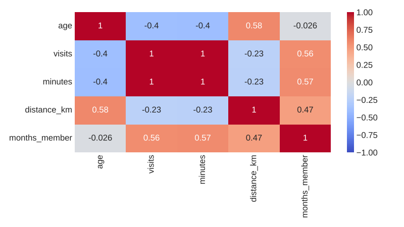

Prepare
In this stage, we start to fix this weirdness in preparation of training our model. This section focuses on how to treat missing data, how to separate out weird values, and when to completely remove unfair advantages.
Extreme values, words, codes and dates, same scale and repeated columns come from week 5. The last group shows what to write when a check finds nothing to fix.
Missing values
Fill the gap with a typical value, drop the row, or keep the gap as a fact.
Misleading values
The note becomes its own yes/no column, and the code becomes a number that cannot be mistaken for a real one.
Unfair advantages
A column that is only filled in after the answer is known cannot stay.
Extreme values
Decide whether a far-away value is a mistake or real, then fill it, cap it, or keep it.
Words, codes and dates
Turn words, number labels and dates into numbers a model can use.
Same scale
Stop the column with the biggest numbers from deciding which rows look alike.
Repeated columns
Keep one of two columns that say the same thing.
Nothing to fix
When a check finds nothing, write down the check and what it showed.
A model cannot learn from an empty cell, so every gap has to become something before we build a model. Which option is right depends on how many gaps the column has, and whether the gap itself tells you something.
First, we work out what a typical value is, so that we know what to fill with. For a column whose values sit in an even spread, the average is fine:
35.6
In the gym from the lecture, the average age of the nine members we have is 35.6, so 36 is a reasonable typical age. For a column with a long tail (a few very large values pulling the average up), the middle value when sorted is a better "typical", because the tail does not move it. In Bank Marketing, balance has an average of 1,362, but:
448.0
Nothing prints when this works. Run isnull().sum() again and the column's count should now be 0. In your report, say which value you filled with and why that one.
mode() gives the most common value in a column (the [0] takes the first, in case two values tie). In Bank Marketing:
'secondary'
Filling with the most common value makes that value a little more common still, so if the column has a lot of gaps (more than about one row in ten), look at the last question in this section before you fill: the gap may be worth keeping instead.
dropna removes the rows that have a gap, and subset says which column to check, so that gaps in other columns are left alone.
(45211, 17) (44923, 17)
In Bank Marketing, dropping the rows with a gap in job removes 288 rows, which is 0.6% of the table. Check that the number of rows removed matches the gap count you found in the Explore stage. If far more disappeared than you expected, the column name is misspelled or the gaps were bigger than you thought.
To check this, we mark which rows have a gap, and then group those marks by the target. The mean() of a True/False column is the fraction that are True, so this gives the fraction of gaps in each category:
y no 0.31 yes 0.10
In Bank Marketing, the contact column is missing for 31% of the clients who said no, but only 10% of those who said yes. The gap is not spread evenly, so it tells us something about the client, and filling it in would erase that. Keep it as a category of its own instead:
Run value_counts() on the column and unknown should appear with the count you expected (13,020 for contact). From here on, unknown is a value like any other, and the model can learn from it.
A misleading value is a number that is really a note, like −1 for "never contacted". The computer counts it as a real number, so it distorts every average it touches. The fix is to give the note its own column, and then replace the code with a number that cannot be mistaken for a real one.
The first line asks every row "is this not the code?" and keeps the yes/no answers as a new column. The second line swaps every code for a replacement number. The new column's name is yours to choose; pick one that says what the note meant (in Bank Marketing, was_contacted).
The replacement depends on whether a true value exists. In the gym, Eve's −1 visits became 0, because she had not joined yet and 0 really was her count. In Bank Marketing, a client who was never contacted has no true number of days since the last contact, so we write a number that cannot be mistaken for a real one: the largest real value in pdays is 871, so 999 sits safely beyond it, and the new column records what the 999 means. Check your column's largest real value with .max() before you choose.
Check the new column's counts:
False 36954 True 8257
In Bank Marketing, 36,954 clients were never contacted before, which matches the count of −1s from the Explore stage. In your report, say what the code meant, where you found that out (the dataset's UCI page), and why you chose the replacement you did.
An unfair advantage is a column that is only filled in after the answer is known. No code can find it for you. You find it by asking, for every column: would I know this before I needed the guess? Once found, the fix is one line.
drop removes the columns you name, and you can list several inside the square brackets.
(45211, 16)
In Bank Marketing, dropping duration leaves 16 columns. The same line is the fix for a column that is mostly empty, because a column with almost no values in it has almost nothing for a model to learn from. In your report, say which finding made you drop each column.
An extreme value sits far away from all the other values in its column, like a member who lives 250 km from their gym when everyone else lives within 8 km. One value like this can pull the average a long way, and it can squash every other value when we put the columns on the same scale. Before changing it, we need to decide whether it is a mistake or real, because the fix is different for each.
A box plot shows where most of the values in a column sit. The box holds the middle half of the rows, and the lines above and below it (the "whiskers") reach out to the furthest values that are not too far away. Anything beyond a whisker is drawn as a single dot, so that values far from the rest stand out.

Next, we ask the data for the rows above a value you read off the plot, so that you can see whose values the dots are. Type the value and run:
name age visits had_last_month minutes branch distance_km plan \
5 Finn 38 10 True 560 1 250 annual
joined renewed
5 2024-02 yesLook at each dot's whole row, because the other columns can help you decide whether the value could be real. A box plot marks dots by a rule of thumb, so it will nearly always show a few, and a dot on its own does not mean anything is wrong with the data.
No code can make this decision for you. Compare the value with what the dataset's documentation (its UCI page) says the column holds, and ask whether a real row could have it. In the gym, Finn's 250 km could be a typo for 2.5, or Finn could have moved away and kept his membership.
If it is a mistake and you cannot tell what it should be, treat it as missing, and fill it with a typical value, as in the Missing values questions. First, we work out the average of the other values, so that we know what to fill with. Type the mistaken value and run:
np.float64(4.0)
Then we swap the mistaken value for an empty cell (np.nan, which needs import numpy as np at the top of your notebook) and fill it. Type the value to fill with and run:
If it is real, keep the row. You can cap the value, which the next question shows, or leave it exactly as it is. Leaving it can be the right choice for some models, which we come back to in the modelling weeks.
Two things to watch, whichever you choose. First, work out any limit or fill value from the whole column, never separately for each group of the target. Your model will not know the target for new rows, so a fix that uses the target to change a column gives it an unfair advantage. Second, after capping, a box plot drawn separately for each group of the target can still show dots, because each group's box works out its own whiskers. That is expected, and it does not mean the cap failed.
In your report, say which values you looked at, whether you decided each one was a mistake or real, and why.
Capping means choosing a limit, and bringing anything above it down to the limit. We use the end of the box plot's top whisker as the limit, so that the limit is one you can explain. First, we find where the box starts (q1) and where it ends (q3). quantile(0.25) is the value a quarter of the rows sit below, and quantile(0.75) is the value a quarter of the rows sit above:
The box starts at 2.25 and ends at 5.75
The whisker reaches one and a half box heights above the top of the box, and the box height is q3 - q1:
Limit: 11.0
In the gym, that is 5.75 + 1.5 × 3.5 = 11 km. Now we bring anything above the limit down to it. clip means "keep every value inside this limit", and nothing prints when it works:
Finally, we check the average again:
Average: 4.4
In the gym, the average distance drops from 28.3 km to 4.4 km, which is close to where the members really live. Finn is still in the data at 11 km, so he still counts as living further away than everyone else. If the average has not changed, check that you ran the clip line and that the column name matches exactly. For a column with extreme values at the bottom as well, clip(lower=...) works in the same way, with the bottom whisker q1 - 1.5 * (q3 - q1) as the limit.
Most models in scikit-learn can only work with numbers. Some columns hold words, some hold numbers that are really labels, and some hold dates written as text. Each of these needs turning into numbers that mean what they say before a model can use them.
First, we check what type of data pandas thinks each column holds:
name str age int64 visits int64 had_last_month bool minutes int64 branch int64 distance_km int64 plan str joined str renewed str dtype: object
Columns shown as str or object (depending on your version of pandas) hold words. In the gym, name only labels the member and renewed is the target, so we set those two aside, and joined is a date (see the last question in this section). That leaves plan, and branch once its codes are swapped for names (next question).
get_dummies gives each word in a column its own yes/no column, so plan becomes plan_annual and plan_monthly. A member on the monthly plan gets True in plan_monthly and False in plan_annual.
Index(['name', 'age', 'visits', 'had_last_month', 'minutes', 'distance_km',
'joined', 'renewed', 'plan_annual', 'plan_monthly', 'branch_campus',
'branch_city centre', 'branch_retail park'],
dtype='str')Check that each column you named has gone, and that one new column has appeared for each of its words. A column with many different words makes many new columns, so count them with nunique() before you run this. In your report, say which columns you turned into yes/no columns.
pandas reads a column of whole numbers as an amount (int64), even when each number is a label. Taking the average is a quick test, because an average of labels makes no sense:
np.float64(1.7)
An average branch of 1.7 means nothing, because there is no gym number 1.7. Next, we count how many rows have each value:
branch 1 5 2 3 3 2 Name: count, dtype: int64
The dataset's documentation (its UCI page) is where you find what each code means. For the gym, 1 = city centre, 2 = campus and 3 = retail park, so we swap each code for its name. map takes a list of pairs inside curly brackets, each one a code and the name to swap it for.
branch city centre 5 campus 3 retail park 2 Name: count, dtype: int64
The counts should match the ones before the swap. If some rows are missing from the counts, their code is not in your list of pairs. If the documentation does not say what the codes mean, you can still treat the column as labels by turning the numbers into text:
Either way, the column now holds words, so it goes through get_dummies from the previous question.
To the computer, a date written as text, like 2025-01, is only a label, so it cannot tell how far apart two dates are. Counting the months from each date up to a fixed day turns the column into an amount a model can compare. First, we tell pandas that the column holds dates, and set the fixed day.
Then we count the months between the two. Each whole year counts as 12 months, and the months part adds or takes away the rest. For Amy, who joined in January 2025, that is (2026 − 2025) × 12 + (10 − 1) = 21:
joined months_member 0 2025-01 21 1 2025-03 19 2 2024-11 23 3 2025-06 16 4 2026-09 1
Check one row by hand, as we did for Amy. Choose a fixed day that makes sense for your data, such as the day the data was collected, and say which day you chose in your report. Once the new column is made, the date column has done its job, so we remove it:
Some models compare rows by how far apart their values are, so a column with much bigger numbers than the rest decides which rows count as alike. Putting every number column on the same scale gives each column an equal say.
First, we compare the smallest and largest value in the number columns.
visits minutes distance_km min 0 0 1 max 15 840 250
In the gym, minutes runs up to 840 while visits only reaches 15, so a difference of a few minutes would count for more than a difference of several visits. MinMaxScaler squeezes every column into 0 to 1, where 0 is the column's smallest value and 1 is its largest. Each value becomes (value − smallest) ÷ (largest − smallest).
Look at the largest value of distance_km too: 250. One extreme value stretches the column, so after squeezing, every other member's distance would sit close to 0. Deal with extreme values before you scale.
We join the scaler and the model together with make_pipeline, so that the smallest and largest values are worked out from the training set only, and the test set is squeezed using those same values:
1.0
X_train, y_train, X_test and y_test are your training set and test set, from train_test_split. For another model, swap KNeighborsClassifier(n_neighbors=3) for that model. For a model that does not need scaling, leave MinMaxScaler() out, and say why in your report.
Two columns that say the same thing make some models count the same fact twice. A correlation heatmap finds the pairs worth checking, and a quick sum shows whether one column can be worked out from the other.
A correlation heatmap shows how strongly each pair of number columns is linked, from −1 to 1. A value close to 1 (or to −1) means one column can be worked out almost exactly from the other.

minutes meets visits shows 1. Every other pair of different columns is between −0.4 and 0.58.Before dropping anything, we check why the two columns are linked, by working out one from the other.
0 55.0 1 NaN 2 58.8 3 50.0 4 NaN 5 56.0 6 45.0 7 56.0 8 58.3 9 57.8 dtype: float64
In the gym, each visit lasts about an hour, so minutes is visits said again in a different unit. (Ben and Eve show NaN, "not a number", because they made no visits, and you cannot divide by zero.) We keep one of the two and drop the other.
In the gym, we kept visits because it is the column we cleaned in week 4. In your report, say which pair you found, why they are linked, and which one you kept and why.
Not every dataset has every problem. When a check finds nothing, that is still a finding, and the output of the check is your evidence.
Every question on this page starts with a check, such as counting the empty cells or drawing a box plot. Run the check, even when you expect it to find nothing, so that you have the output to point to. For example, isnull().sum() counts the empty cells in each column:
name 0 age 0 visits 0 had_last_month 0 minutes 0 branch 0 distance_km 0 plan 0 joined 0 renewed 0 dtype: int64
In the week 5 gym, every count is 0, so there is nothing to fill or drop. Write down the check you ran, what it showed, and what that means for your data. For example: “We counted the empty cells in every column with isnull().sum() and found none, so no filling or dropping was needed.” Keep the output in your notebook, so that the reader can see the evidence behind the sentence.